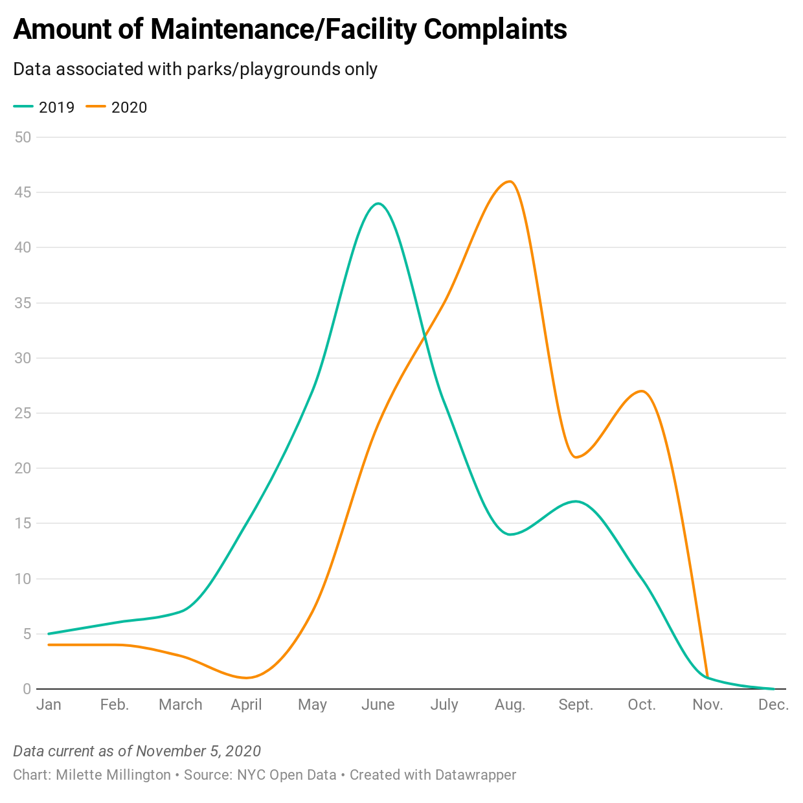

Charisse Hill, the press officer for the New York City Department of Parks and Recreation, blamed staff shortages for the rise.“In Queens, this summer we had 449 less people doing maintenance compared to last year,” Hill said.
In District 13, There were 97 complaints to 311 from July through August. In comparison, there were 55 complaints in the same time period last year.
